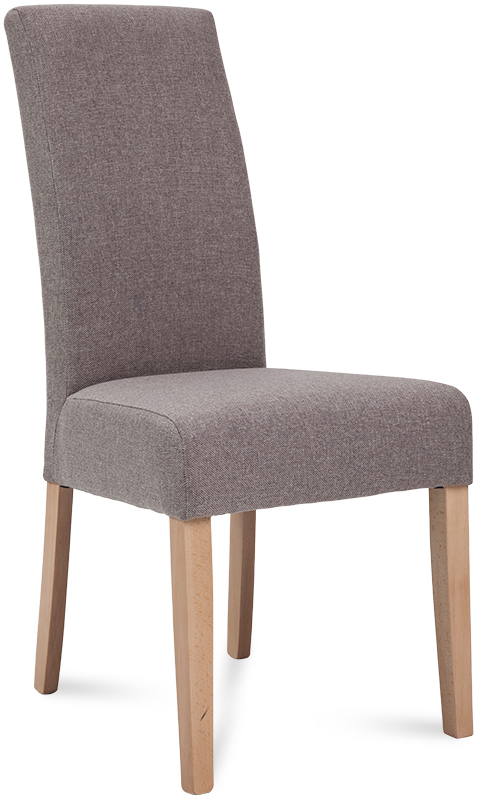
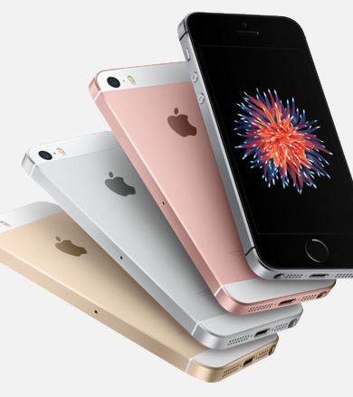
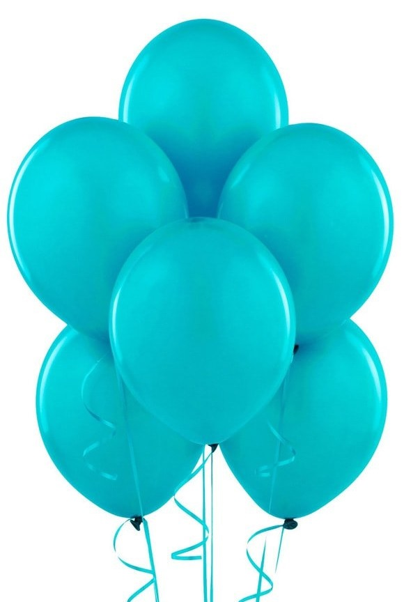
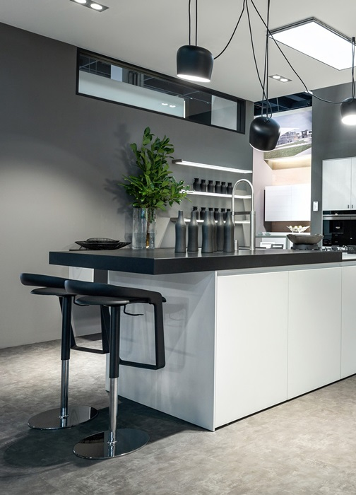
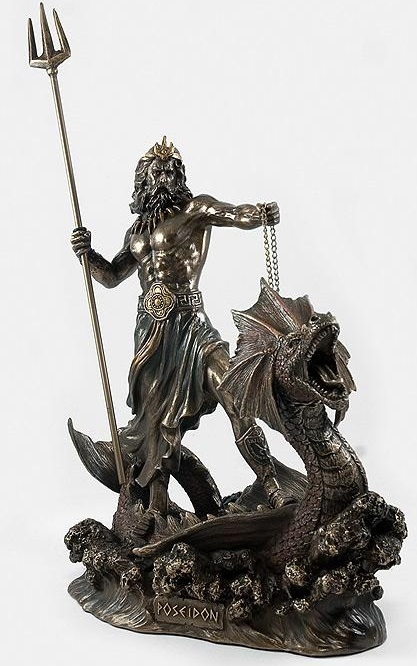
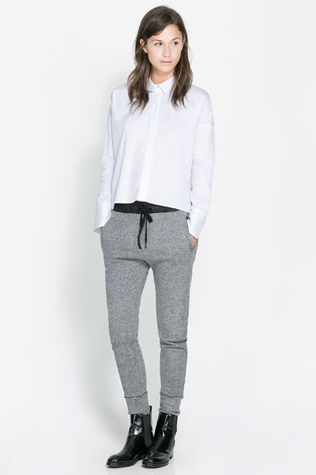
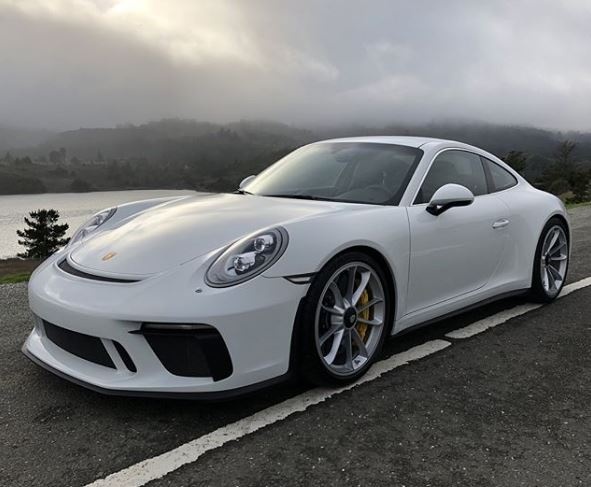
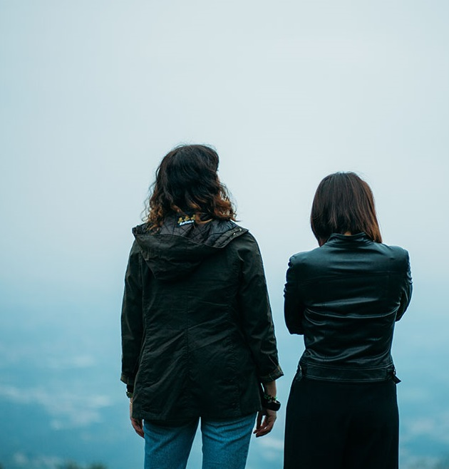

Design
Fashion
Interview
Scott Sasso, the man behind 10 Deep.
Everyone in our scene had an entry point into streetwear and mine was New York’s own 10Deep. Initially I was drawn by the bold graphics and the bravado of the statements on the t-shirts, before falling in love with the unique cut’n’sew pieces, all with the small details and quirks that only a designer with real passion would have dreamt up.
Themes Kingdom is a small creative studio dedicated to making awesome WordPress themes.
http://www.themeskingdom.com



Fashion
Photography
Mate Moro
Born in 1989, in Dunaujvaros, Hungary, now based in Budapest, photographer Mate Moro is visually arresting some of the most interesting editorials we have seen lately. One of his best is depicted in the series of yayoi kusama x louis vuitton for the room magazine